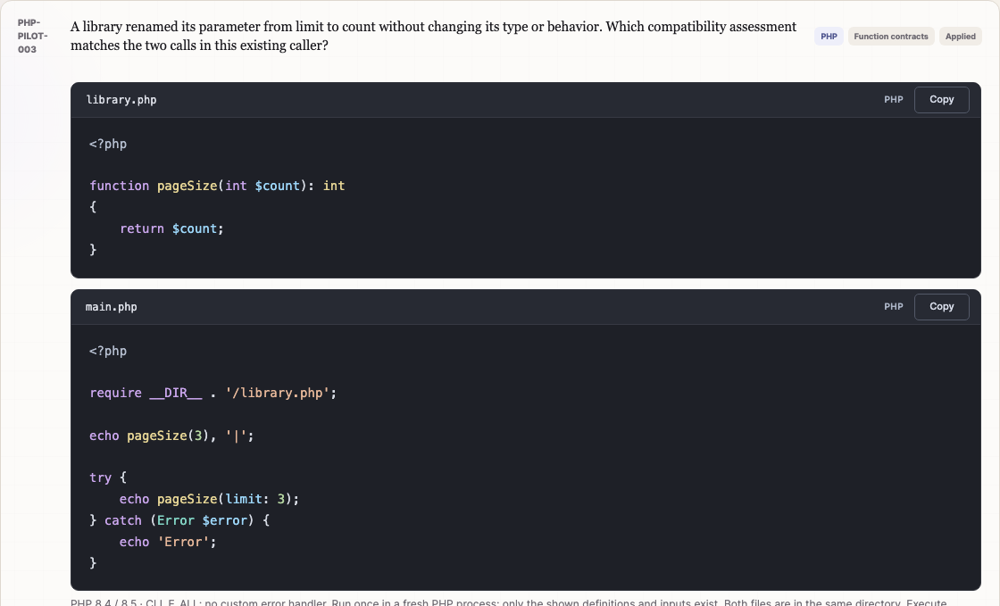
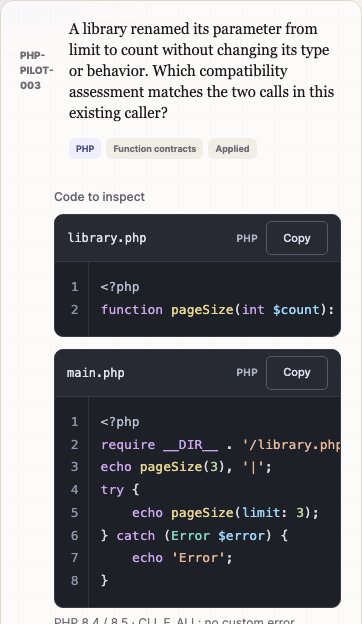
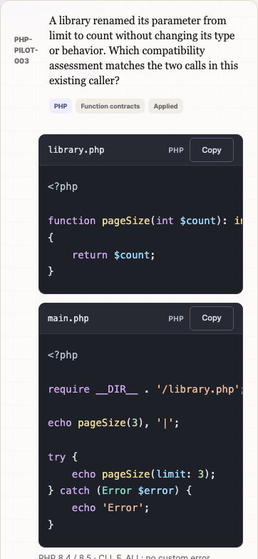
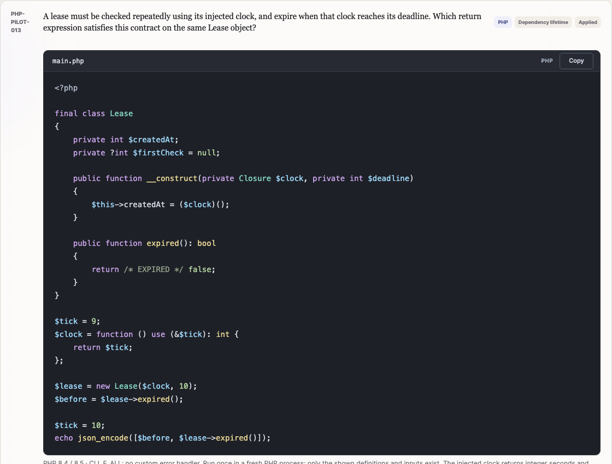
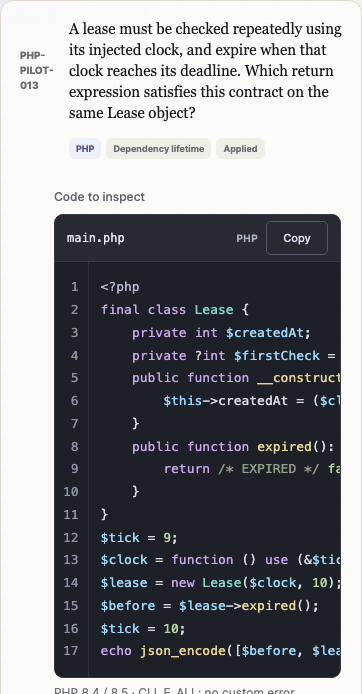
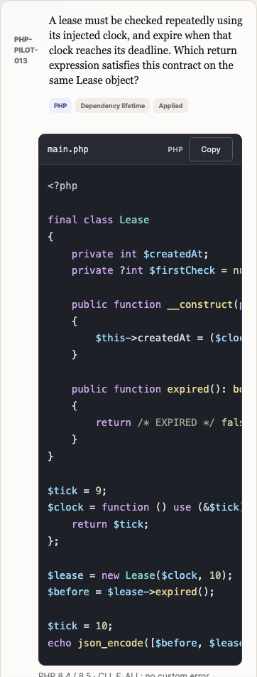
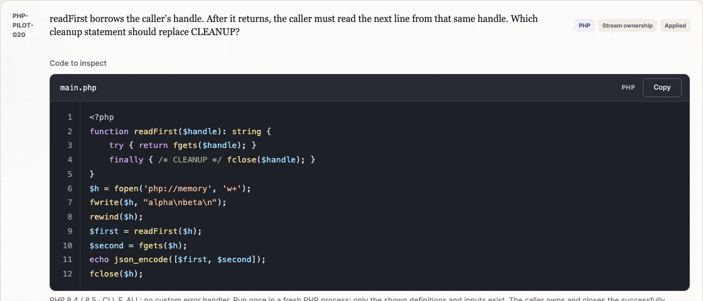
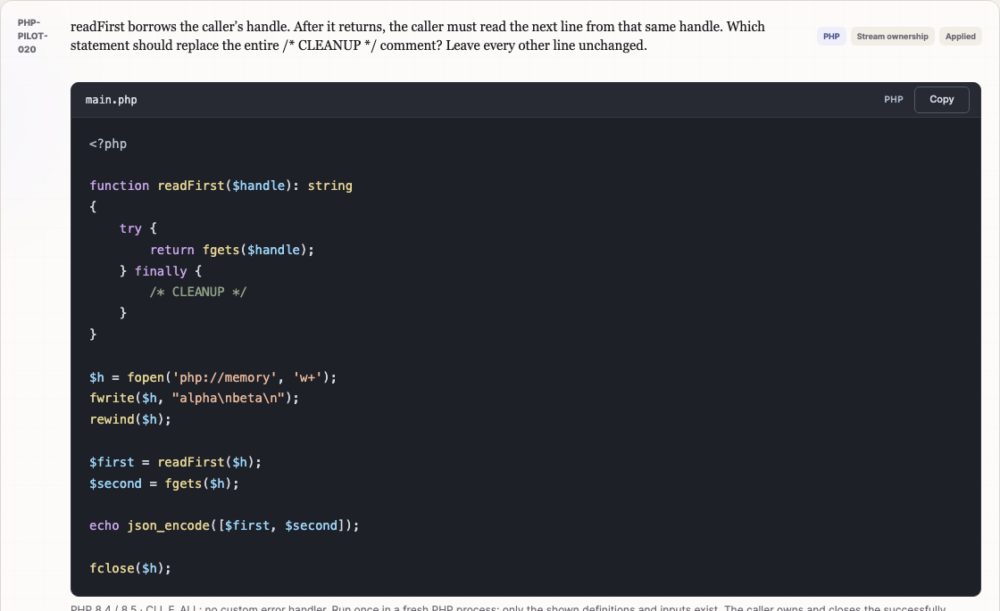
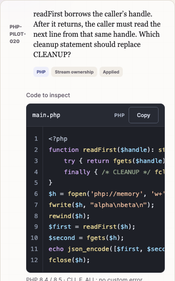
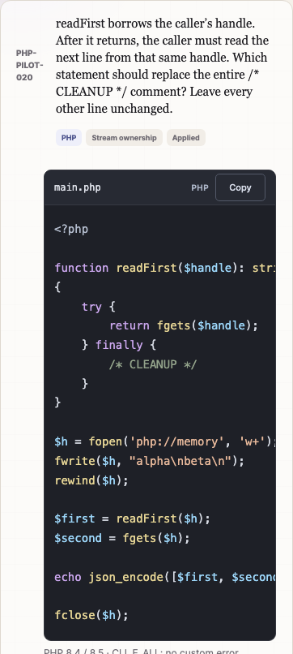

Local review · 4 November 2026 · remediation/question-quality-pilot
Readable PHP source throughout the 20-question pilot
The actual stored source is now formatted across PHP-PILOT-001 through PHP-PILOT-020: 21 complete PHP files, one explicit class-body fragment and the four method choices in question 015. Classes, functions, methods, conditionals, loops and try/catch/finally blocks use conventional multiline layout and four-space indentation, with blank lines between logical sections.
The pilot retains its dark syntax colors and copy buttons, with 14px source text, compact filename/language headers and full-height snippets. Line numbers and the redundant “Code to inspect” caption are hidden for this collection. Long lines scroll horizontally. The component still supports optional line numbers; other tracks keep their existing viewer configuration.
Question IDs, option IDs, answer keys, schema and scoring are preserved. The original 2,500 questions, including all 300 existing PHP questions, are unchanged. The only deliberate correction beyond whitespace is the separately reviewed CLEANUP template and its instructions. Nothing was pushed, merged or deployed.
The before images show the previous highlighted viewer with its compressed source; the after images show the same pilot questions after source formatting. Click an image for full resolution. Desktop: 1280 × 1000; mobile: 390 × 844.
PHP-PILOT-003 · Two files, with expanded function and try/catch blocks



Compare mobile screenshots




PHP-PILOT-013 · Class, methods and closure with clear indentation



Compare mobile screenshots




PHP-PILOT-020 · One explicit CLEANUP placeholder




Compare mobile screenshots




The CLEANUP correction
Previously, finally { /* CLEANUP */ fclose($handle); } left it unclear whether an answer should replace the comment or the closing statement. The fixture silently replaced both. The new block contains only /* CLEANUP */, and the prompt explicitly instructs replacement of that entire comment while leaving all other lines unchanged. The caller’s final fclose($h) remains.
The fixture now replaces precisely the displayed comment. All four completed candidates have the same non-whitespace PHP tokens and observed behavior as the original candidate fixtures. The correct key remains detach-local (unset($handle);).
| Stable option ID | Observed result on PHP 8.4 and 8.5 | Assessment |
|---|---|---|
close | TypeError on the caller’s next read | Incorrect |
detach-local | ["alpha\n","beta\n"] | Correct |
rewind | ["alpha\n","alpha\n"] | Incorrect |
seek-end | ["alpha\n",false] | Incorrect |
This is an intentional template correction, not a claim that its unfilled form behaves identically: the unfilled template no longer closes the borrowed stream. The question evaluates insertion of one of the four choices, and those completed programs remain behaviorally equivalent to the previously reviewed fixtures. The explanation also states that omitting the finally block is a simpler refactor outside this one-statement task.
Validation
All checks passed. Formatting was applied to the authoring records, not through a display-time formatter. The layout follows the relevant PSR-12 conventions: four-space indentation, declaration braces on their own lines, control-flow braces beside the header, one statement per line and single LF line endings. Existing expression forms and typing behavior are preserved.
- PHP 8.4.17 and 8.5.2: all 22 source units lint, with the class-body fragment placed in a wrapper. Each version also passes 63 source/variant lint checks and 61 isolated executions covering all 20 keys and all distractor candidates. Every runtime observation and repaired-example result matches the archived pre-formatting evidence.
- 89 token-equivalence comparisons per PHP version: source units, multiline method choices and completed executable variants. String/comment contents, operators and statement order are compared exactly. Only PHP whitespace and opening-tag trailing whitespace are ignored. Line/offset-sensitive constructs require separate review. The sole source-token exception is the explicitly reviewed CLEANUP deletion described above.
- Existing automated suite: all 2,500 existing records and notes match their baseline; all 24 option permutations per pilot question still grade and explain correctly. The highlighter preserves all 1,428 current source units exactly.
- Chrome 156.0.8078.80: all three suites pass (24 check groups). All 20 Learn/Exam questions, 60 distractor rationales, stored progress, pre-submit neutrality, all 22 exact clipboard copies, injection safety, multiple files, fragments and questions without code were verified.
- Responsive reading: mobile touch scrolling works for source and multiline method choices, without wrapping source or selecting an answer during a horizontal gesture. Copying with Enter or Space does not submit an exam. Full snippets remain visible in the page rather than a short vertically scrolling editor panel.
Mobile checks use isolated Chrome emulation and touch gestures; physical handsets were not tested. No question PHP runs in the browser. Runtime validation uses the existing reviewed allowlist and isolated temporary fixtures, with no production data or external services.
Automated log · Token and syntax evidence · Runtime observations · Viewer checks · PHP workflow checks · Original-bank regression checks

Changes and review artifacts
- Pilot authoring records: 22 formatted source units, four formatted method options, clarified question 020 stem/trace. No other question metadata or key changes.
- Read-only viewer, app renderer and styles: a pilot-only reading layout and safe multiline choice rendering in questions, feedback, bank review and missed-answer review. No new dependency or backend.
- Formatting preservation tests: original snapshots plus token comparisons. The reviewed runtime allowlist and exact placeholder fixture were refreshed only after inspection and passing token checks. Runtime tests now compare their observations with the archived evidence too.
- All 20 formatted questions and explanations, question JSON and current manifest are refreshed. Pre-formatting records and old runtime results remain archived. Per-question review and source hashes list every affected ID.
node tests.mjs
node tools/build-site.mjs
QUIZ_SITE_DIR=_site BROWSER_REPORT_DIR=php-pilot/formatting/after/regression node tests/browser.mjs
QUIZ_SITE_DIR=_site BROWSER_REPORT_DIR=php-pilot/formatting/after/pilot node tests/php-pilot/browser.mjs
QUIZ_SITE_DIR=_site BROWSER_REPORT_DIR=php-pilot/formatting/after/viewer node tests/code-viewer/browser.mjsThe static build still contains only the 20 runtime assets. Review files and fixtures are excluded. This work is ready for local visual review; it has not been deployed.